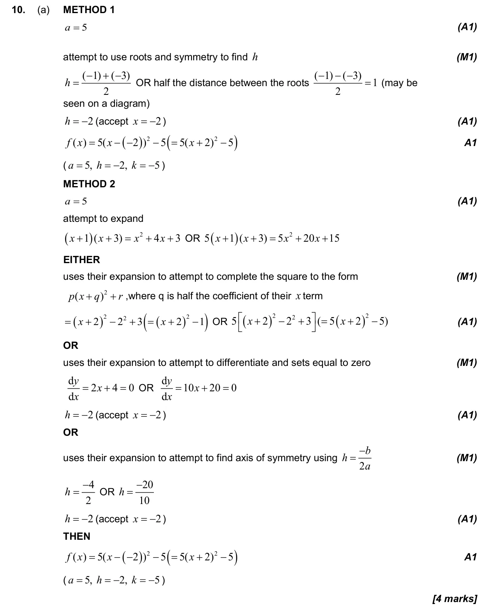
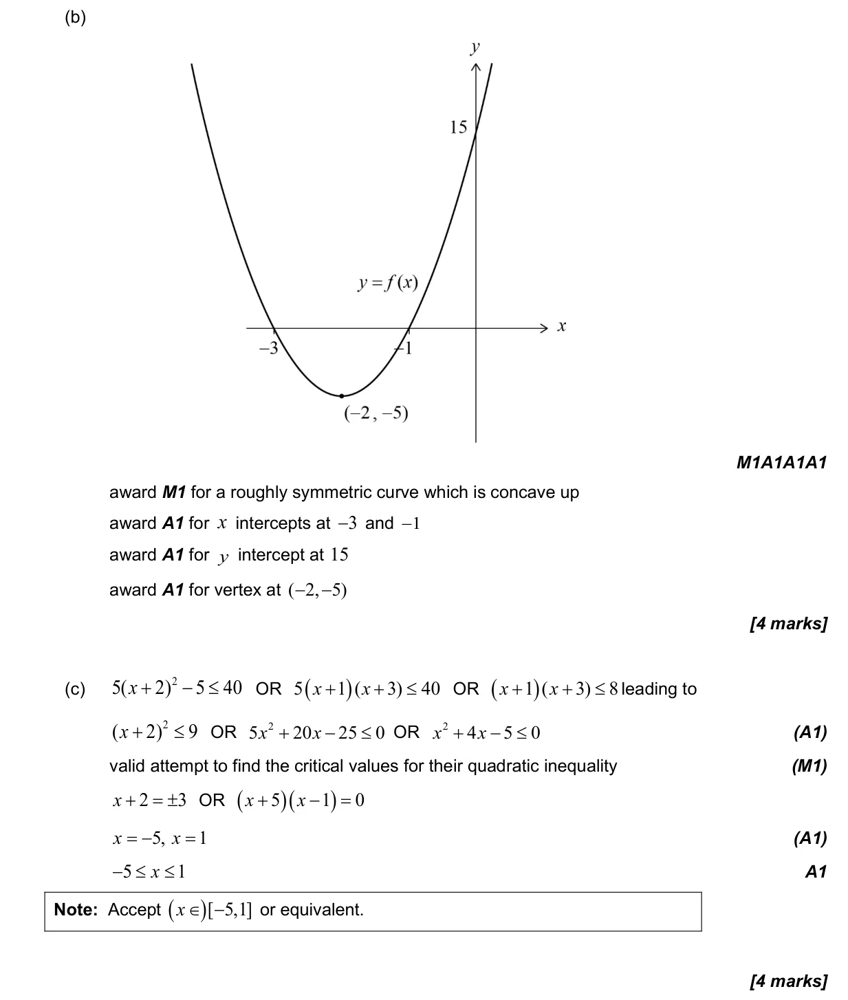
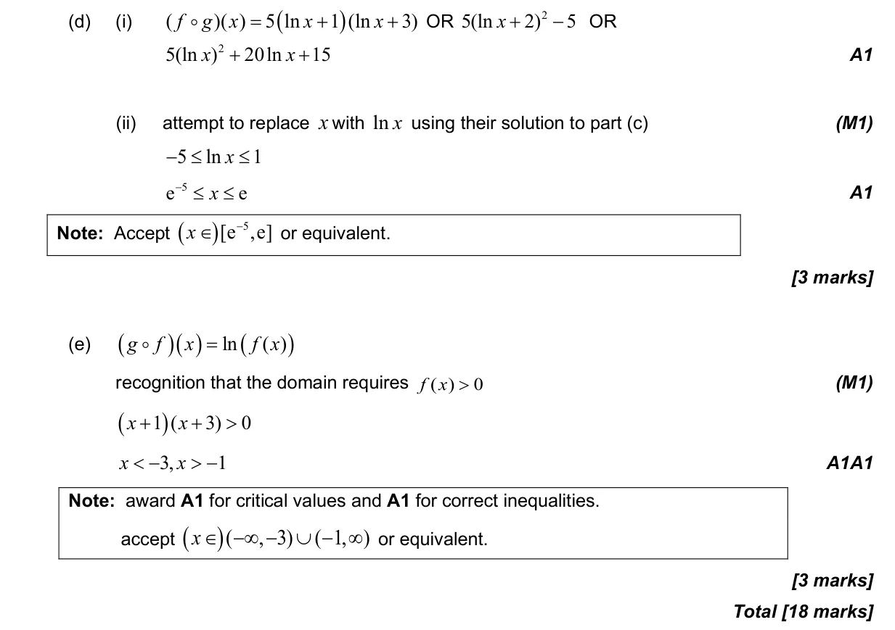

18 marks P1 TZ1 Section B No calculator 2.6 Quadratic function2.7 Solutions of quadratic equations and inequalities, discriminant and nature of roots2.5 Composite functions, identity and finding inverse2.3 Graphs of functions1.5 Laws of exponents with integer exponents and introduction to logarithms2.2 Functions, notation, domain, range and inverse as reflection Question Hide breakdown abcde Markscheme 